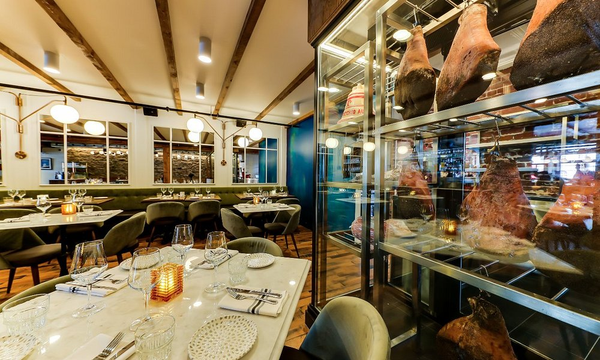
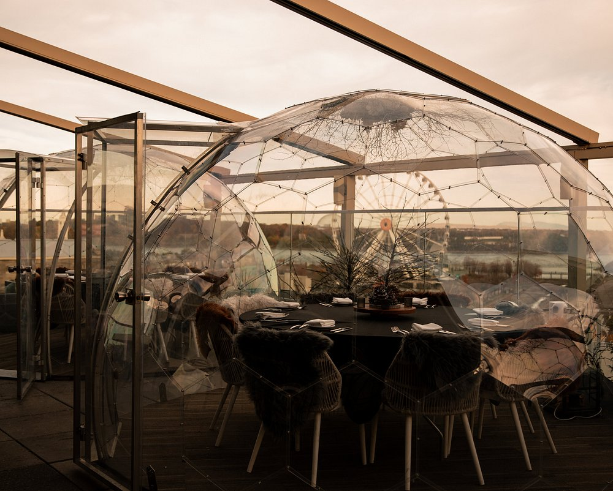
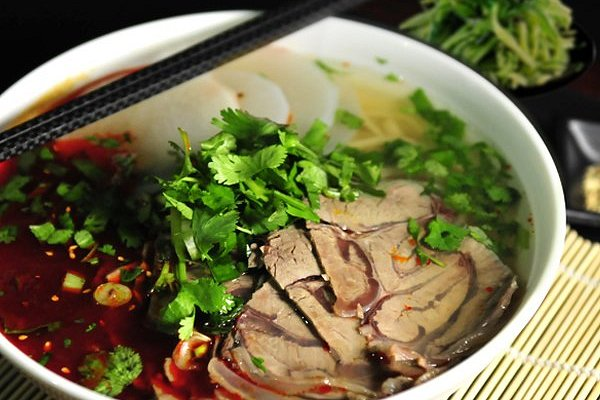
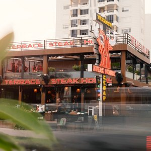
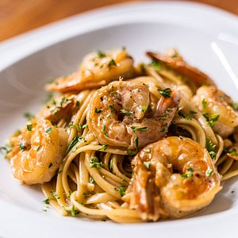

JACAPO celebrates the unique Italian culinary elegance by offering dishes crafted from fresh and seasonal ingredients, as well as homemade specialized charcuterie. Our chefs, Giovanni Vella & Jason Jang, draw inspiration from rustic Roman trattorias to present a menu featuring fresh pasta and other Italian classics! Located in the heart of Old Montreal, the restaurant, spread over two floors, welcomes you in an authentic and warm setting. In addition to our summer terrace in front of the restaurant, our veranda will leave you dazzled with its skylight, greenery, and magnificent mural.

Located on the 8th floor of the William Gray Hotel, Terrasse William Gray is the place to be to soak up the summer season. With a breathtaking view of Place Jacques-Cartier, the St. Lawrence River, and Montreal’s Ferris wheel, our terrace offers refreshing summer wines, cocktails, beers, and delicious sharing platters. The terrace is heated and equipped with retractable awnings to ensure our guests’ comfort during cooler days.

Small restaurant found by chance, a great welcome, fresh pasta made on site.

Terrace Steak House – Flavors for Every Taste! At Terrace Steak House, we offer the finest steak varieties for meat lovers while also catering to guests with special dietary preferences! With our vegetarian-friendly and halal options, we ensure a delicious dining experience for everyone. Our menu features carefully prepared halal-certified meats, fresh vegetables, and tasty vegetarian alternatives. Enjoy your meal in our spacious terrace area, accompanied by a breathtaking view. We invite you to discover our dishes, crafted with high-quality ingredients and the special touch of our expert chefs!

Fashionable modern restaurant ensuring consistent quality food that guests will enjoy in every meal. Customer service is one of our trademarks in a pristine environment that enhances our guests' overall experience. Elegance and simplicity will make you feel at home with our best international plates overlooking our great Ocean. We offer only the best fresh catch of the day, prepared the moment you order. Vegan and gluten-free options are available. The owner is available to explain the origins of each creation. Reservations recommended.